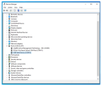
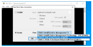
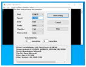
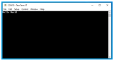

2.6 Running a Precompiled Application Example
This section gives a detail explanation on how to open, build and program an existing application example.
Prerequisites
Install MPLAB X IDE
Install XC32 Compliler
-
Install MCC Plugin
COM Port Setup
To resolve COM port issues that prevent the output of text to the Tera Term terminal using the WBZ451 curiosity board, follow these steps:
- Close Tera Term and unplug the curiosity board from the computer.
- Open Device Manager.
Figure 2-20. Device Manager  - Plug the Curiosity board back into the computer.
- In the Tera Term window, select
“Serial”.
- Select USB Serial Device from “Port”
 - In the Setup tab,
change the value from 9600 to 115200 in “Speed”. Click New
setting to apply the changes.
- Press the reset button on the
board to see text on the terminal if the curiosity board is programmed to do
that.
Opening , Building and Programming an Existing Application Example
Connect Curiosity Board to the PC using USB cable
Open MPLAB X IDE
Select File > Open Project
- Browse to project location of choice (In this example, it is "ble_sensor_app") project, select project file from the location "
<Harmony Content Path>\wireless_apps_pic32cxbz2_wbz45\apps\ble\advanced applications\ble_sensor\firmware\ble_sensor.X"Attention Information related to the workings of the application example are available in PIC32CXBZ3 WBZ35 Application Developer's Guide" available in the ble_sensor folder
Open Project Properties:
Select WBZ451 Curiosity Board as hardware tool for programming
Ensure correct DFP v1.0.xx is selected as mentioned in the Tools and Harmony Components
Select XC32 compiler
Select option Build Project in IDE to compile the application example
-
Select option Run Project in IDE to program the target – the onboard debugger will program the example applicationNote: A smartphone app might be needed to explore the full feature set of BLE Application examples.